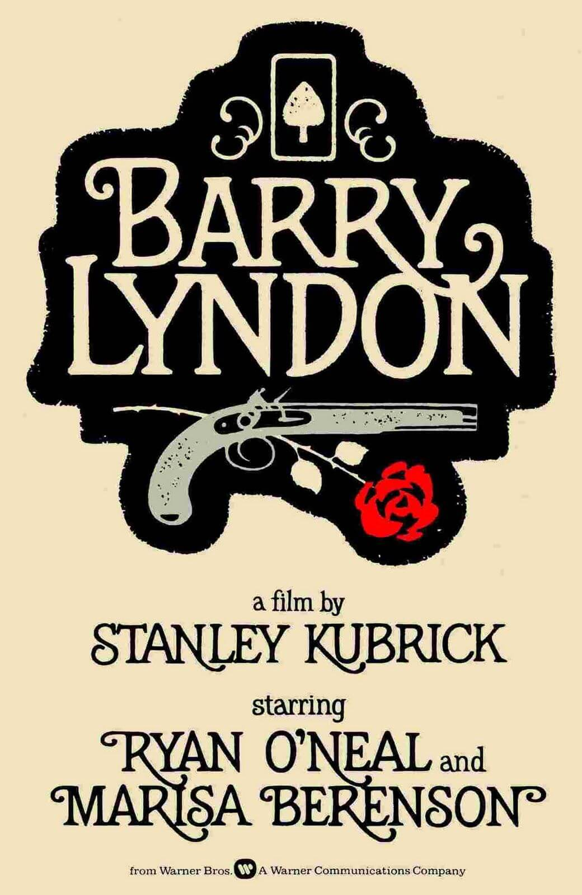
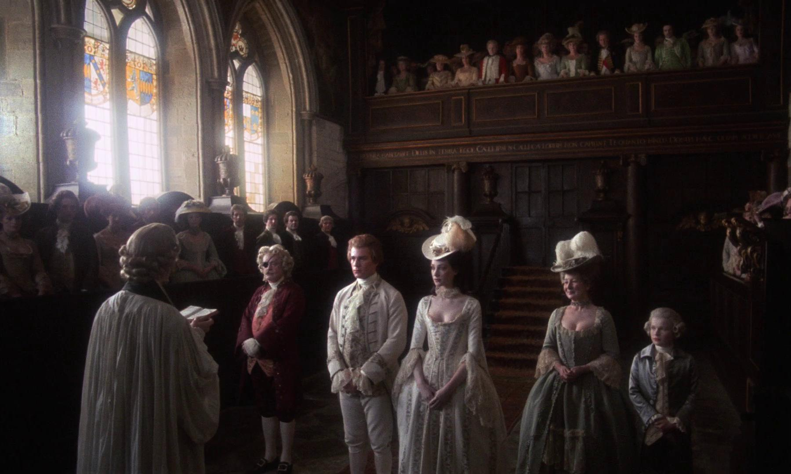
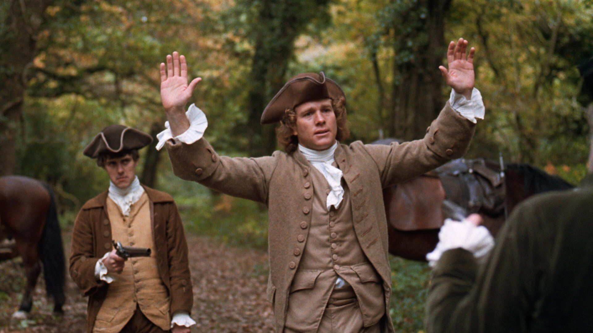

Questo progetto è stato sviluppato per il corso di laurea Metodologie e Tecniche di Simulazione. Il nostro obiettivo è stato esplorare criticamente come la combinazione di query SPARQL e Large Language Models (LLM) possa identificare e arricchire sistematicamente i limiti informativi all'interno di un grafo di conoscenza esistente.

Barry Lyndon - Stanley Kubrick
Abbiamo scelto di concentrarci su Barry Lyndon (1975), il celebre capolavoro cinematografico di Stanley Kubrick. La scelta è guidata da una profonda passione per l'opera, ma soprattutto dal suo immenso valore storico, tecnico e artistico: il film rappresenta una vera e propria "pittura in movimento", dove Kubrick ha superato i limiti tecnologici dell'epoca utilizzando speciali lenti ottiche NASA per girare a lume di candela, ispirandosi direttamente alla pittura settecentesca di maestri come Thomas Gainsborough e William Hogarth.
Abbiamo scelto Barry Lyndon per questo progetto perché:
- È un'opera ampiamente conosciuta e celebrata a livello internazionale, considerata uno dei vertici assoluti della cinematografia.
- La sua straordinaria rilevanza storica, artistica e tecnica permette di tracciare facilmente parallelismi e collegamenti diretti con altri domini del patrimonio culturale, in particolare con la pittura del Settecento e la storia dell'innovazione tecnologica ottica.
- Sebbene le descrizioni esistenti sui grafi di conoscenza siano accurate, esse si limitano agli aspetti commerciali e industriali del film; c'è quindi un margine per migliorarne la rappresentazione semantica, arricchendola con dettagli visivi, influenze artistiche e tecniche.
- Infine, questo capolavoro rappresenta una passione condivisa all'interno del nostro team, rendendo stimolante la sfida di tradurre la complessità di un'opera d'arte cinematografica nel linguaggio strutturato del Web Semantico
Il silenzio del grafo.
Come grafo di conoscenza di base abbiamo scelto Wikidata, l'hub di dati collegati (Linked Data) più esteso e utilizzato al mondo. Sebbene Wikidata offra una rappresentazione ricca e ben strutturata di Barry Lyndon per quanto riguarda i dati commerciali, produttivi e di cast, l'analisi semantica ha fatto emergere una forte lacuna (gap informativo): il grafo è completamente silente sulle connessioni artistiche (i dipinti) e sugli strumenti tecnologici (le lenti Zeiss f/0.7) che ne definiscono l'identità culturale.


Tre fasi rigorose.
Il nostro lavoro si è articolato seguendo una metodologia rigorosa in tre fasi: un'analisi iniziale basato su documentazione storica e query SPARQL avanzate con filtri testuali ed euristici (La combinazione di DISTINCT e REGEX) per dimostrare scientificamente l'assenza del dato; una fase di Estensione Ontologica teorica in formato Turtle (RDFS/OWL) per superare i limiti strutturali del vocabolario standard di Wikidata creando nuove proprietà ad hoc (come cinematographicLensUsed); infine, l'Estrazione e Validazione delle Triple tramite diverse strategie di Prompt Engineering (Zero-shot, Few-shot e Chain of Thought) supportate da molteplici modelli di Intelligenza Artificiale, capaci di tradurre le informazioni testuali in nodi e archi di conoscenza validata.
Wikidata
Base di partenza per l'interrogazione del grafo e l'analisi dei Linked Data.
Query Service di Wikidata
Endpoint SPARQL utilizzato per l'audit strutturale e la ricerca di proprietà di dominio.
ChatGPT
Modello linguistico utilizzato per l'estrazione, generazione delle triple, validazione logica e co-progrettazione delle estensioni ontologiche.
Gemini
Modello linguistico utilizzato per l'estrazione, generazione delle triple, validazione logica e co-progrettazione delle estensioni ontologiche.
IL NOSTRO TEAM
Questo progetto è stato sviluppato in collaborazione da: